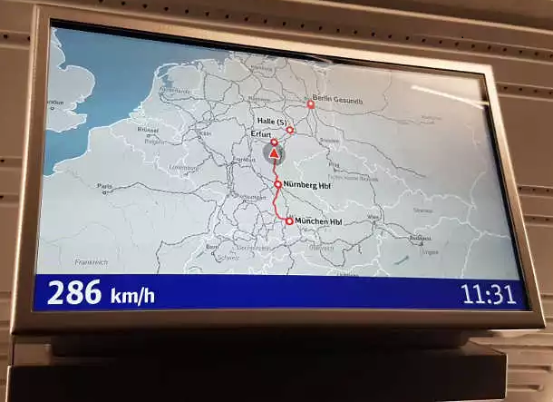

1. Ankunftszeit ablesen
Du hast es dir auf deinem reservierten Sitzplatz gemütlich gemacht und genießt die entspannte Fahrt, ohne während der langen Reise stehen zu müssen. Doch während der Zug dahinruckelt, steigt die Vorfreude: Wann genau wirst du am Berliner Hauptbahnhof ankommen? Nutze das Diagramm, um die Ankunftszeit zu ermitteln.

2. Geschwindigkeit & Bewegungsgleichung
Soweit zur planmäßigen Ankunft. Während die Landschaft vor dem Fenster an dir vorüberzieht, versuchst du dir die Zeit zu vertreiben, indem du versuchst, die durchschnittliche Geschwindigkeit deines Zuges zu berechnen...
3. Zwischenstopp Erfurt
Um dir die Zeit ein wenig zu vertreiben, versuchst du, mithilfe deiner bisherigen Überlegungen, die Ankunftszeit des Zuges in Erfurt zu berechnen. Du weißt, dass die Zugstrecke von München nach Erfurt 318 km lang ist.
4. Physikalisches Verständnis
Als du von deinem Halbdämmerungszustand kurz aufschaust, siehst du die Geschwindigkeitsanzeige des ICE:

Du erinnerst dich, dass im Physikunterricht immer zwischen "Momentangeschwindigkeit" und "Durchschnittsgeschwindigkeit" unterschieden wurde und dass deine Beobachtung deswegen nicht im Widerspruch zu deinem unter "2." berechneten Ergebnis steht.